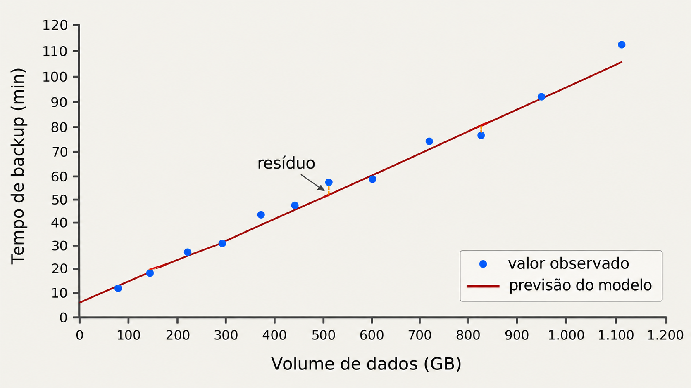
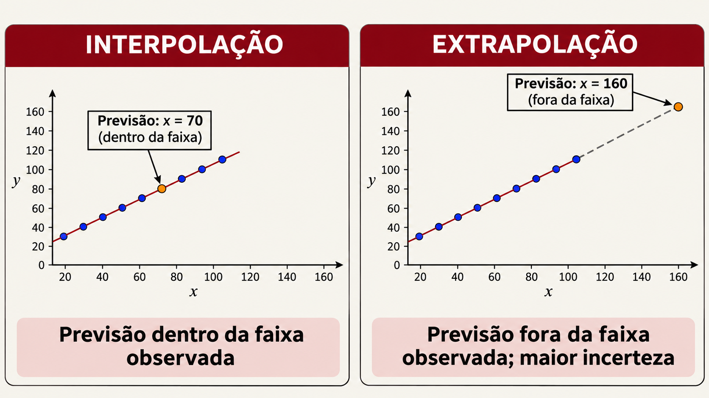
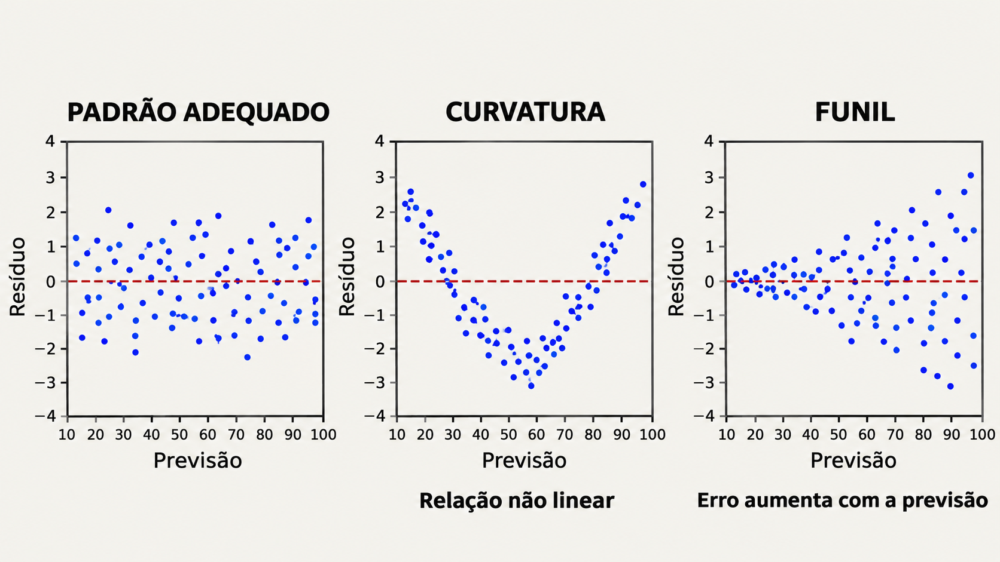

Modelagem, métricas de erro e análise de resíduos
Machine Learning · ADS · 2026.2
Ao final da aula, o estudante deverá conseguir:
| Classificação | Regressão | |
|---|---|---|
| Saída | Categoria | Valor numérico |
| Exemplo | Chamado urgente ou não | Tempo de backup em minutos |
| Métricas | Acurácia, precisão, recall | MAE, RMSE, R² |
Regressão Logística é uma exceção no nome: ela realiza classificação.
Uma equipe registra o volume processado e o tempo total de cada backup.
| Volume de dados | Tempo observado |
|---|---|
| 20 GB | 9 min |
| 40 GB | 15 min |
| 60 GB | 23 min |
| 80 GB | 28 min |
| 100 GB | 36 min |
Problema: estimar o tempo de um backup de 70 GB.
Em duplas, escolham a equação que melhor representa os dados:
A. tempo = 0,10 × volume + 5
B. tempo = 0,34 × volume + 2
C. tempo = 0,60 × volume - 2
Procedimento obrigatório:
Entrega: letra escolhida, cálculo para 70 GB e justificativa.
| Equação | Previsão para 100 GB | Erro em relação a 36 |
|---|---|---|
| A | 15 min | 21 min |
| B | 36 min | 0 min |
| C | 58 min | 22 min |
Para 70 GB:
tempo = 0,34 × 70 + 2 = 25,8 minutos
| Elemento | Significado | Notação |
|---|---|---|
| Característica | Volume de dados em GB | X |
| Alvo | Tempo de backup em minutos | y |
| Previsão | Tempo estimado pelo modelo | ŷ |
Cada linha representa um backup já realizado.
A Regressão Linear estima uma variável numérica por meio de uma combinação linear das características de entrada.
Com uma característica, o modelo representa a relação por uma reta.
Com várias características, o princípio permanece igual, mas cada coluna recebe seu próprio coeficiente.

A reta produz uma previsão para cada volume. A distância vertical até o valor observado forma o resíduo.
ŷ = b₀ + b₁x
| Símbolo | Interpretação |
|---|---|
x | Volume de dados |
ŷ | Tempo previsto |
b₀ | Intercepto ou valor inicial |
b₁ | Coeficiente angular ou inclinação |
Na equação tempo = 2 + 0,34 × volume:
b₁ = 0,34 minuto por GB
Para cada aumento de 1 GB, o modelo acrescenta 0,34 minuto ao tempo previsto.
Para um aumento de 10 GB, a previsão aumenta aproximadamente 3,4 minutos.
Na mesma equação:
b₀ = 2 minutos
Quando o volume é zero, a reta prevê 2 minutos.
O intercepto pode representar uma etapa fixa, como preparação e encerramento. Em alguns problemas, ele serve apenas para posicionar matematicamente a reta.
Modelo:
ŷ = 2 + 0,34x
Para um backup de 70 GB:
ŷ = 2 + 0,34 × 70
ŷ = 2 + 23,8
ŷ = 25,8 minutosO resultado é uma estimativa, não uma garantia de duração exata.
resíduo = valor real - valor previsto
Se o backup de 70 GB durou 28 minutos:
resíduo = 28 - 25,8 = 2,2 minutos
A Regressão Linear procura coeficientes que minimizam a soma dos resíduos ao quadrado:
Σ (y - ŷ)²
O algoritmo compara possíveis valores de intercepto e coeficiente.
| Reta candidata | Comportamento |
|---|---|
| Inclinação pequena | Subestima backups maiores |
| Inclinação grande | Superestima backups maiores |
| Inclinação equilibrada | Distribui erros positivos e negativos |
A reta escolhida possui o menor erro quadrático no conjunto utilizado para o treinamento.
Uma relação linear mostra que duas variáveis variaram juntas nos dados observados.
O coeficiente não prova que uma variável causou a outra.
No exemplo, volume maior tende a exigir mais tempo. Outros fatores, como rede, quantidade de arquivos e servidor, também podem influenciar.

A análise dos resíduos ajuda a identificar parte dessas limitações.
Vamos gerar 300 backups fictícios com relação linear e ruído aleatório.
Os dados são sintéticos e não representam uma infraestrutura real.
import numpy as np
import pandas as pd
rng = np.random.default_rng(42)
volume = rng.uniform(5, 200, 300)
ruido = rng.normal(0, 5, 300)
tempo = 2.5 + 0.32 * volume + ruido
dados = pd.DataFrame({
"volume_gb": volume,
"tempo_min": tempo
})A regra contém uma parte previsível e um ruído com média zero e desvio padrão de 5 minutos.
display(dados.head())
display(dados.describe())
print(dados.isna().sum())| Comando | Verificação |
|---|---|
head() | Formato e primeiras linhas |
describe() | Faixa, média e dispersão |
isna() | Valores ausentes |
import matplotlib.pyplot as plt
plt.scatter(dados["volume_gb"], dados["tempo_min"], alpha=0.7)
plt.xlabel("Volume de dados (GB)")
plt.ylabel("Tempo de backup (min)")
plt.show()O gráfico deve mostrar tendência crescente com dispersão ao redor de uma linha imaginária.
from sklearn.model_selection import train_test_split
X = dados[["volume_gb"]]
y = dados["tempo_min"]
X_treino, X_teste, y_treino, y_teste = train_test_split(
X, y, test_size=0.25, random_state=42
)from sklearn.dummy import DummyRegressor
baseline = DummyRegressor(strategy="mean")
baseline.fit(X_treino, y_treino)
prev_baseline = baseline.predict(X_teste)O baseline prevê a média do tempo de treino para todos os backups.
A Regressão Linear precisa reduzir o erro em relação a essa estratégia.
from sklearn.linear_model import LinearRegression
modelo = LinearRegression()
modelo.fit(X_treino, y_treino)fit estima o intercepto e o coeficiente usando somente os dados de treino.
Após o treinamento, o objeto modelo contém a equação aprendida.
print("Intercepto:", modelo.intercept_)
print("Coeficiente:", modelo.coef_[0])
print(
f"tempo = {modelo.intercept_:.2f} "
f"+ {modelo.coef_[0]:.2f} × volume"
)intercept_: previsão quando o volume vale zero.coef_[0]: aumento previsto por GB.novo_backup = pd.DataFrame({"volume_gb": [120]})
tempo_previsto = modelo.predict(novo_backup)
print(f"Previsão: {tempo_previsto[0]:.2f} minutos")O novo dado deve possuir as mesmas colunas e unidades usadas no treinamento.
A previsão é válida dentro das condições representadas pelo conjunto de dados.
previsoes = modelo.predict(X_teste)
resultado = pd.DataFrame({
"real": y_teste,
"previsto": previsoes
})
resultado["residuo"] = resultado["real"] - resultado["previsto"]
display(resultado.head())Cada linha permite verificar o valor real, a previsão e a direção do erro.
Um erro pequeno no treino não garante bom desempenho em casos novos.
| Resultado | Interpretação |
|---|---|
| Treino e teste semelhantes | Generalização coerente |
| Treino melhor que teste | Possível sobreajuste ou mudança nos dados |
| Treino e teste ruins | Relação linear insuficiente ou dados fracos |
ordem = X_teste["volume_gb"].argsort()
plt.scatter(X_teste["volume_gb"], y_teste, label="real")
plt.plot(
X_teste["volume_gb"].iloc[ordem],
previsoes[ordem],
color="red",
label="modelo"
)
plt.xlabel("Volume de dados (GB)")
plt.ylabel("Tempo de backup (min)")
plt.legend()
plt.show()O experimento ensina o processo. Ele não produz um estimador pronto para uso operacional.
Dados numéricos, separação, baseline, treinamento, previsão, métricas e resíduos.
Uma métrica resume os erros do teste em um valor comparável.
Modelos devem ser comparados no mesmo conjunto de teste e com a mesma métrica.
Uma métrica isolada não mostra a distribuição nem a causa dos erros.
MAE = média de |y - ŷ|
No exemplo, o MAE é medido em minutos.
| Real | Previsto | Erro | Erro absoluto |
|---|---|---|---|
| 20 | 18 | 2 | 2 |
| 30 | 33 | -3 | 3 |
| 40 | 39 | 1 | 1 |
| 50 | 54 | -4 | 4 |
MAE = (2 + 3 + 1 + 4) / 4 = 2,5 minutos
MSE = média de (y - ŷ)²
Com erros 2, -3, 1 e -4:
MSE = (4 + 9 + 1 + 16) / 4 = 7,5 min²
RMSE = √MSE
No exemplo:
RMSE = √7,5 ≈ 2,74 minutos
| Métrica | Uso principal | Efeito de erros grandes |
|---|---|---|
| MAE | Erro médio fácil de interpretar | Crescimento proporcional |
| RMSE | Destacar previsões muito distantes | Penalidade mais forte |
Um modelo pode ter MAE aceitável e ainda apresentar alguns erros graves. O RMSE ajuda a perceber esse comportamento.
O R² compara o modelo com uma estratégia que sempre prevê a média do alvo.
| R² | Interpretação inicial |
|---|---|
| 1 | Previsões perfeitas no conjunto avaliado |
| 0 | Desempenho equivalente à média |
| Menor que 0 | Pior que prever a média |
Quanto maior, melhor, mas o contexto e os erros absolutos continuam necessários.
Relate R² junto com MAE ou RMSE.
| Métrica | Unidade | Melhor direção | Pergunta respondida |
|---|---|---|---|
| MAE | minutos | Menor | Qual o erro absoluto médio? |
| MSE | minutos² | Menor | Quanto os erros grandes pesam? |
| RMSE | minutos | Menor | Qual o erro com maior penalização? |
| R² | sem unidade | Maior | Quanto o modelo supera a média? |
from sklearn.metrics import (
mean_absolute_error, mean_squared_error, r2_score
)
mae = mean_absolute_error(y_teste, previsoes)
mse = mean_squared_error(y_teste, previsoes)
rmse = np.sqrt(mse)
r2 = r2_score(y_teste, previsoes)
print(f"MAE: {mae:.2f} min")
print(f"RMSE: {rmse:.2f} min")
print(f"R²: {r2:.3f}")| Necessidade | Métrica em destaque |
|---|---|
| Comunicar erro típico em minutos | MAE |
| Penalizar atrasos muito grandes | RMSE |
| Comparar com a previsão pela média | R² |
Uma avaliação completa combina métricas com inspeção dos resíduos.
O resíduo preserva a direção de cada erro:
resíduo = real - previsto

residuos = y_teste - previsoes
plt.scatter(previsoes, residuos, alpha=0.7)
plt.axhline(0, color="red", linestyle="--")
plt.xlabel("Tempo previsto")
plt.ylabel("Resíduo")
plt.show()Procure concentração ao redor de zero, curvatura, funil e pontos isolados.
Em duplas, executem o notebook e comparem baseline e Regressão Linear.
Entrega: tabela de resultados, previsão e conclusão.
| Modelo | MAE | RMSE | R² |
|---|---|---|---|
| Baseline pela média | ... | ... | ... |
| Regressão Linear | ... | ... | ... |
Completem também:
Alterem apenas esta linha:
# Antes
ruido = rng.normal(0, 5, 300)
# Experimento
ruido = rng.normal(0, 15, 300)Executem novamente e registrem:
Material da aula: slides e notebook da prática guiada.